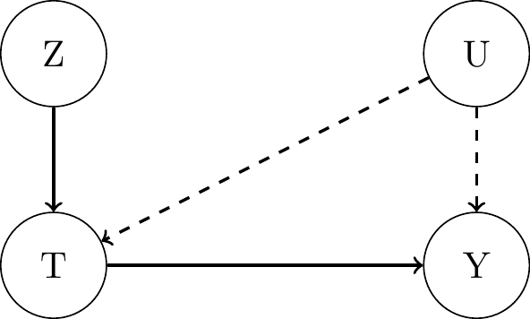
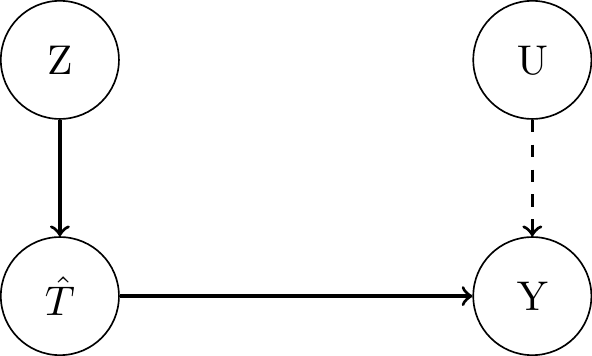

(7) Unobserved Confounding and Instrumental Variables
Causal Data Science for Business Analytics
Hamburg University of Technology
Tuesday, 18. June 2024
Partial Identification
Motivation
Conditional Independence / Unconfoundedness: assumption is not testable.- “The Law of Decreasing Credibility: The credibility of inference decreases with the strength of the assumptions maintained.” (Manski, 2003)
\[ \begin{align*} \tau_{\text{ATE}} &= \mathbb{E}[Y_i(1)] - \mathbb{E}[Y_i(0)] \\ &= \mathbb{E}_{\mathbf{X, U}}[\mathbb{E}[Y_i|T_i=1, \mathbf{X_i, U_i}] - \mathbb{E}[Y_i|T_i=0, \mathbf{X_i, U_i}]] \\ & \color{#FF7E15}{\stackrel{?}{\approx}} \mathbb{E}_{\mathbf{X}}[\mathbb{E}[Y_i|T_i=1, \mathbf{X_i}] - \mathbb{E}[Y_i|T_i=0, \mathbf{X_i}]] \end{align*} \]
- “Questionable” equality is required to hold for a
point estimateof the ATE. Partial Identificationis the method to estimate the ATE under weaker assumptions yielding aset estimate- an interval with upper and lower bounds.- Trade-off between assumptions and width of the interval.
No Assumption (Worst-case) Bounds
- Assume potential outcomes are bounded: \(y^{LB} \leq Y_i(t) \leq y^{UB}\), \(\forall t\).
- Bounds of ITE: \(y^{LB} - y^{UB} \leq Y_i(1) - Y_i(0) \leq y^{UB} - y^{LB}\)
- Bounds of ATE: \(y^{LB} - y^{UB} \leq \mathbb{E}[Y_i(1) - Y_i(0)] \leq y^{UB} - y^{LB}\)
- Interval length: \(2(y^{UB} - y^{LB})\)
- But the ATE interval length can actually be halved. How?
- Let’s use the
observational-counterfactual decomposition of the ATE: \[ \begin{align*} \mathbb{E}[Y_i(1) - Y_i(0)] &= \mathbb{E}[Y_i(1)] - \mathbb{E}[Y_i(0)] \\ &= P(T_i=1)\color{#00C1D4}{\mathbb{E}[Y_i(1)|T_i=1]} + P(T_1=0)\color{#FF7E15}{\mathbb{E}[Y_i(1)|T_i=0]} - P(T_i=1)\color{#FF7E15}{\mathbb{E}[Y_i(0)|T_i=1]} - P(T_i=0)\color{#00C1D4}{\mathbb{E}[Y_i(0)|T_i=0]}\\ &= P(T_i=1)\color{#00C1D4}{\mathbb{E}[Y_i|T_i=1]} + P(T_i=0)\color{#FF7E15}{\mathbb{E}[Y_i(1)|T_i=0]} - P(T_i=1)\color{#FF7E15}{\mathbb{E}[Y_i(0)|T_i=1]} - P(T_i=0)\color{#00C1D4}{\mathbb{E}[Y_i|T_i=0]}\\ &:= p\color{#00C1D4}{\mathbb{E}[Y_i|T_i=1]} + (1-p)\color{#FF7E15}{\mathbb{E}[Y_i(1)|T_i=0]} - p\color{#FF7E15}{\mathbb{E}[Y_i(0)|T_i=1]} - (1-p)\color{#00C1D4}{\mathbb{E}[Y_i|T_i=0]}\\ \end{align*} \]
- Upper bound: \(\mathbb{E}[Y_i(1) - Y_i(0)] \leq p\color{#00C1D4}{\mathbb{E}[Y_i|T_i=1]} + (1-p)\color{#00C1D4}{y^{UB}} - p\color{#00C1D4}{y^{LB}} - (1-p)\color{#00C1D4}{\mathbb{E}[Y_i|T_i=0]}\)
- Lower bound: \(\mathbb{E}[Y_i(1) - Y_i(0)] \geq p\color{#00C1D4}{\mathbb{E}[Y_i|T_i=1]} + (1-p)\color{#00C1D4}{y^{LB}} - p\color{#00C1D4}{y^{UB}} - (1-p)\color{#00C1D4}{\mathbb{E}[Y_i|T_i=0]}\)
- Interval length: \((1-p)y^{UB} - py^{LB} - (1-p)y^{LB} + py^{UB} = y^{UB} - y^{LB}\)
- Unfortunately, the interval always contains 0. We need more assumptions!
Monotone Treatment Response (MTR) Bounds
- Assume that the treatment has a non-negative monotone effect on the outcome: \(Y_i(1) \geq Y_i(0)\), \(\forall i\).
- (Works also with a non-positive monotone effect).
- Lower bound of ITE: \(Y_i(1) - Y_i(0) \geq 0\).
- Lower bound of ATE: \(\mathbb{E}[Y_i(1) - Y_i(0)] \geq 0\).
- Why?
- First use the assumption to derive the following two implications:
- \(\mathbb{E}[Y_i(1)|T_i=0] \geq \mathbb{E}[Y_i(0)|T_i=0] = \mathbb{E}[Y_i|T_i=0]\).
- \(-\mathbb{E}[Y_i(0)|T_i=1] \geq -\mathbb{E}[Y_i(1)|T_i=1] = -\mathbb{E}[Y_i|T_i=1]\).
- Use the two implications to replace the counterfactuals in the
observational-counterfactual decomposition to derive a lower bound of the ATE: \[ \begin{align*} \mathbb{E}[Y_i(1) - Y_i(0)] &= p\color{#00C1D4}{\mathbb{E}[Y_i|T_i=1]} + (1-p)\color{#FF7E15}{\mathbb{E}[Y_i(1)|T_i=0]} - p\color{#FF7E15}{\mathbb{E}[Y_i(0)|T_i=1]} - (1-p)\color{#00C1D4}{\mathbb{E}[Y_i|T_i=0]}\\ & \geq p\color{#00C1D4}{\mathbb{E}[Y_i|T_i=1]} + (1-p)\color{#FF7E15}{\mathbb{E}[Y_i|T_i=0]} - p\color{#FF7E15}{\mathbb{E}[Y_i|T_i=1]} - (1-p)\color{#00C1D4}{\mathbb{E}[Y_i|T_i=0]} \\ &= 0 \end{align*} \]
- Can be combined with no-assumption upper bound to get a tighter interval, but it still always contains 0.
Monotone Treatment Selection (MTS) Bounds
- Assume positive self-selection: those who generally have better outcomes self-select into treatment:
- \(\mathbb{E}[Y_i(1)|T_i=1] \geq \mathbb{E}[Y_i(1)|T_i=0]\).
- \(\mathbb{E}[Y_i(0)|T_i=1] \geq \mathbb{E}[Y_i(0)|T_i=0]\).
- Upper bound of ATE is the associational difference: \(\mathbb{E}[Y_i(1) - Y_i(0)] \leq \mathbb{E}[Y_i|T_i=1] - \mathbb{E}[Y_i|T_i=0]\).
- Why?
- Let’s use again the
observational-counterfactual decomposition of the ATE and replace: \[ \begin{align*} \mathbb{E}[Y_i(1) - Y_i(0)] &= p\color{#00C1D4}{\mathbb{E}[Y_i|T_i=1]} + (1-p)\color{#FF7E15}{\mathbb{E}[Y_i(1)|T_i=0]} - p\color{#FF7E15}{\mathbb{E}[Y_i(0)|T_i=1]} - (1-p)\color{#00C1D4}{\mathbb{E}[Y_i|T_i=0]}\\ &\leq p\color{#00C1D4}{\mathbb{E}[Y_i|T_i=1]} + (1-p)\color{#FF7E15}{\mathbb{E}[Y_i(1)|T_i=1]} - p\color{#FF7E15}{\mathbb{E}[Y_i(0)|T_i=0]} - (1-p)\color{#00C1D4}{\mathbb{E}[Y_i|T_i=0]}\\ &= p\color{#00C1D4}{\mathbb{E}[Y_i|T_i=1]} + (1-p)\color{#00C1D4}{\mathbb{E}[Y_i|T_i=1]} - p\color{#00C1D4}{\mathbb{E}[Y_i|T_i=0]} - (1-p)\color{#00C1D4}{\mathbb{E}[Y_i|T_i=0]}\\ &= \color{#00C1D4}{\mathbb{E}[Y_i|T_i=1]} - \color{#00C1D4}{\mathbb{E}[Y_i|T_i=0]}\\ \end{align*} \]
- Can be combined with MTR lower bound to get a tighter interval, but it still always contains 0.
Optimal Treatment Selection (OTS) Bounds 1
- Assume individuals always receive the treatment that is best for them:
- \(T_i = 0 \implies Y_i(0) > Y_i(1) \quad\) and \(\quad T_i = 1 \implies Y_i(1) \geq Y_i(0)\).
- From the assumption, we know:
- \(\mathbb{E}[Y_i(1)|T_i=0] \leq \mathbb{E}[Y_i(0)|T_i=0] = \mathbb{E}[Y_i|T_i=0] \quad\) and \(\quad \mathbb{E}[Y_i(0)|T_i=1] \leq \mathbb{E}[Y_i(1)|T_i=1] = \mathbb{E}[Y_i|T_i=1]\).
- Therefore, we can derive an upper bound for the ATE (together with no-assumption lower bound): \[ \begin{align*} \mathbb{E}[Y_i(1) - Y_i(0)] &= p\color{#00C1D4}{\mathbb{E}[Y_i|T_i=1]} + (1-p)\color{#FF7E15}{\mathbb{E}[Y_i(1)|T_i=0]} - p\color{#FF7E15}{\mathbb{E}[Y_i(0)|T_i=1]} - (1-p)\color{#00C1D4}{\mathbb{E}[Y_i|T_i=0]}\\ &\leq p\color{#00C1D4}{\mathbb{E}[Y_i|T_i=1]} + (1-p)\color{#00C1D4}{\mathbb{E}[Y_i|T_i=0]} - p\color{#00C1D4}{y^{LB}} - (1-p)\color{#00C1D4}{\mathbb{E}[Y_i|T_i=0]}\\ &= p\color{#00C1D4}{\mathbb{E}[Y_i|T_i=1]} - p\color{#00C1D4}{y^{LB}}\\ \end{align*} \]
- And a lower bound for the ATE (together with no-assumption lower bound): \[ \begin{align*} \mathbb{E}[Y_i(1) - Y_i(0)] &= p\color{#00C1D4}{\mathbb{E}[Y_i|T_i=1]} + (1-p)\color{#FF7E15}{\mathbb{E}[Y_i(1)|T_i=0]} - p\color{#FF7E15}{\mathbb{E}[Y_i(0)|T_i=1]} - (1-p)\color{#00C1D4}{\mathbb{E}[Y_i|T_i=0]}\\ &\geq p\color{#00C1D4}{\mathbb{E}[Y_i|T_i=1]} + (1-p)\color{#00C1D4}{y^{LB}} - p\color{#00C1D4}{\mathbb{E}[Y_i|T_i=1]} - (1-p)\color{#00C1D4}{\mathbb{E}[Y_i|T_i=0]}\\ &= (1-p)\color{#00C1D4}{y^{LB}} - (1-p)\color{#00C1D4}{\mathbb{E}[Y_i|T_i=0]}\\ \end{align*} \]
- Interval still always includes 0 and has length: \(p\mathbb{E}[Y_i|T_i=1] + (1 - p)\mathbb{E}[Y_i|T_i=0] - y^{LB}\).
Optimal Treatment Selection (OTS) Bounds 2
- Assume individuals always receive the treatment that is best for them, but add counterpositive:
- \(T_i = 0 \implies Y_i(0) > Y_i(1) \quad\) Counterpositive: \(T_i = 1 \impliedby Y_i(0) \leq Y_i(1)\).
- \(T_i = 1 \implies Y_i(1) \geq Y_i(0) \quad\) Counterpositive: \(T_i = 0 \impliedby Y_i(1) < Y_i(0)\).
- From the above, we can derive two implications:
- \(\mathbb{E}[Y_i(1)|T_i=0] = \mathbb{E}[Y_i(1)|Y_i(0) > Y_i(1)] \color{#00C1D4}{\leq} \mathbb{E}[Y_i(1)|Y_i(0) \leq Y_i(1)] = \mathbb{E}[Y_i(1)|T_i=1] = \mathbb{E}[Y_i|T_i=1]\)
- \(\mathbb{E}[Y_i(0)|T_i=1] = \mathbb{E}[Y_i(0)|Y_i(1) \geq Y_i(0)] \color{#00C1D4}{<} \mathbb{E}[Y_i(0)|Y_i(1) < Y_i(0)] = \mathbb{E}[Y_i(0)|T_i=0] = \mathbb{E}[Y_i|T_i=0]\)
- Therefore, we can derive an upper and lower bound for the ATE:
\[ \begin{align*} \mathbb{E}[Y_i(1) - Y_i(0)] &= p\color{#00C1D4}{\mathbb{E}[Y_i|T_i=1]} + (1-p)\color{#FF7E15}{\mathbb{E}[Y_i(1)|T_i=0]} - p\color{#FF7E15}{\mathbb{E}[Y_i(0)|T_i=1]} - (1-p)\color{#00C1D4}{\mathbb{E}[Y_i|T_i=0]}\\ &\leq p\color{#00C1D4}{\mathbb{E}[Y_i|T_i=1]} + (1-p)\color{#00C1D4}{\mathbb{E}[Y_i|T_i=1]} - p\color{#00C1D4}{y^{LB}} - (1-p)\color{#00C1D4}{\mathbb{E}[Y_i|T_i=0]}\\ &= \color{#00C1D4}{\mathbb{E}[Y_i|T_i=1]} - p\color{#00C1D4}{y^{LB}} - (1-p)\color{#00C1D4}{\mathbb{E}[Y_i|T_i=0]}\\ \end{align*} \] \[ \begin{align*} \mathbb{E}[Y_i(1) - Y_i(0)] &\geq p\color{#00C1D4}{\mathbb{E}[Y_i|T_i=1]} + (1-p)\color{#00C1D4}{y^{LB}} - p\color{#00C1D4}{\mathbb{E}[Y_i|T_i=0]} - (1-p)\color{#00C1D4}{\mathbb{E}[Y_i|T_i=0]}\\ &= p\color{#00C1D4}{\mathbb{E}[Y_i|T_i=1]} + (1-p)\color{#00C1D4}{y^{LB}} - \color{#00C1D4}{\mathbb{E}[Y_i|T_i=0]}\\ \end{align*} \]
- Interval can, but doesn’t have to include 0, finally. Length: \((1-p)\mathbb{E}[Y_i|T_i=1] + p\mathbb{E}[Y_i|T_i=0] - y^{LB}\).
Partial Identification and Bounds: Example
- Assess the effect of 401(k) program participation on net financial assets of 9,915 households in the US in 1991.
library(hdm) # for the data
library(drgee) # for doubly robust estimator
data(pension) # Get data
Y = pension$net_tfa # Outcome
T = pension$p401 # Treatment
X = cbind(pension$age,pension$db,pension$educ,pension$fsize,pension$hown,
pension$inc,pension$male,pension$marr,pension$pira,pension$twoearn) # covariates
dr = drgee(oformula = formula(Y ~ X), eformula = formula(T ~ X), elink="logit") # DR reg
ATE <- as.numeric(dr$coefficients) # ATE
p = mean(T) # Propensity score
ymin = as.numeric(quantile(Y, probs = 0.05)) # outcome lower bound
ymax = as.numeric(quantile(Y, probs = 0.95)) # outcome upper bound
Y1 = mean(Y[T == 1]) # outcome mean for treated
Y0 = mean(Y[T == 0]) # outcome mean for untreated
# No assumption (worst case) bounds
UB = p*Y1 + (1-p)*ymax-p*ymin-(1-p)*Y0
LB = p*Y1 + (1-p)*ymin-p*ymax-(1-p)*Y0
L = UB - LB
cat(sprintf("LowerBound (worst) = %d, ATE = %d, UpperBound (worst) = %d, IntervalLength = %d", round(LB), round(ATE), round(UB), round(L)))
# Monotone Treatment Response (MTR) Bounds
UB = p*Y1 + (1-p)*ymax-p*ymin-(1-p)*Y0
LB = 0
L = UB - LB
cat(sprintf("LowerBound (MTR) = %d, ATE = %d, UpperBound (worst) = %d, IntervalLength = %d", round(LB), round(ATE), round(UB), round(L)))# Monotone Treatment Selection (MTS) Bounds
UB = Y1 - Y0
L = UB - LB
cat(sprintf("LowerBound (MTR) = %d, ATE = %d, UpperBound (MTS) = %d, IntervalLength = %d", round(LB), round(ATE), round(UB), round(L)))
# Optimal Treatment Selection 1 (OTS 1) Bounds
UB = p*Y1 - p*ymin
LB = (1-p)*ymin - (1-p)*Y0
L = UB - LB
cat(sprintf("LowerBound (OTS 1) = %d, ATE = %d, UpperBound (OTS 1) = %d, IntervalLength = %d", round(LB), round(ATE), round(UB), round(L)))
# Optimal Treatment Selection 2 (OTS 2) Bounds
UB = Y1 - p*ymin - (1-p)*Y0
LB = p*Y1 + (1-p)*ymin - Y0
L = UB - LB
cat(sprintf("LowerBound (OTS 2) = %d, ATE = %d, UpperBound (OTS 2) = %d, IntervalLength = %d", round(LB), round(ATE), round(UB), round(L)))
# Mix OTS1 (Upper) and OTS 2 (Lower) Bounds
UB = p*Y1 - p*ymin
LB = p*Y1 + (1-p)*ymin - Y0
L = UB - LB
cat(sprintf("LowerBound (OTS 2) = %d, ATE = %d, UpperBound (OTS 1) = %d, IntervalLength = %d", round(LB), round(ATE), round(UB), round(L)))LowerBound (worst) = -28746, ATE = 11333, UpperBound (worst) = 72253, IntervalLength = 100999LowerBound (MTR) = 0, ATE = 11333, UpperBound (worst) = 72253, IntervalLength = 72253LowerBound (MTR) = 0, ATE = 11333, UpperBound (MTS) = 27372, IntervalLength = 27372LowerBound (OTS 1) = -14687, ATE = 11333, UpperBound (OTS 1) = 12365, IntervalLength = 27052LowerBound (OTS 2) = -7526, ATE = 11333, UpperBound (OTS 2) = 32575, IntervalLength = 40101LowerBound (OTS 2) = -7526, ATE = 11333, UpperBound (OTS 1) = 12365, IntervalLength = 19890Sensitivity Analysis
Linear Model & Single Confounder
- \(Y_i\) as linear function of \(T_i\), observed confounding variables \(\mathbf{X_i}\) and a single unobserved confounding variables \(U_i\):
- \(Y_i = \tau T_i + \mathbf{\beta' X_i} + \gamma U_i + \epsilon_{Y_i}\) and assume that \(Cov(\epsilon_{Y_i},T_i) = 0\)
- Since \(U_i\) is unobserved, we have to estimate this model:
- \(Y_i = \tilde{\tau}T_i + \mathbf{\tilde{\beta}' X_i} + \tilde{\epsilon}_{Y_i}\)
- How does the estimable treatment effect \(\tilde{\tau}\) differ from the true treatment effect \(\tau\)?
- To find out, let’s apply the
Frisch-Waugh-Lovell theoremto the above models to partial out the observed covariates \(\mathbf{X_i}\):- \((Y_i - \mathbb{E}(Y_i|\mathbf{X_i}) = \tau(T_i - \mathbb{E}(T_i|\mathbf{X_i})) + \gamma(U_i - \mathbb{E}(U_i|\mathbf{X_i})) + \epsilon_{Y_i}\)
- \((Y_i - \mathbb{E}(Y_i|\mathbf{X_i}) = \tilde{\tau}(T_i - \mathbb{E}(T_i|\mathbf{X_i})) + \tilde{\epsilon}_{Y_i}\)
- Obtain \(\tilde{\tau}\) and replace \((Y_i - \mathbb{E}(Y_i|\mathbf{X_i})\):
\[ \begin{align*} \tilde{\tau} &= \frac{Cov((Y_i - \mathbb{E}(Y_i|\mathbf{X_i}), (T_i - \mathbb{E}(T_i|\mathbf{X_i})))}{Var((T_i - \mathbb{E}(T_i|\mathbf{X_i})))} = \frac{Cov((\tau(T_i - \mathbb{E}(T_i|\mathbf{X_i})) + \gamma(U_i - \mathbb{E}(U_i|\mathbf{X_i})) + \epsilon_{Y_i}), (T_i - \mathbb{E}(T_i|\mathbf{X_i})))}{Var((T_i - \mathbb{E}(T_i|\mathbf{X_i})))} \\ &= \tau \underbrace{\frac{ Cov((T_i - \mathbb{E}(T_i|\mathbf{X_i})),(T_i - \mathbb{E}(T_i|\mathbf{X_i})))}{Var((T_i - \mathbb{E}(T_i|\mathbf{X_i})))}}_{=1} + \gamma \underbrace{\frac{ Cov((U_i - \mathbb{E}(U_i|\mathbf{X_i})),(T_i - \mathbb{E}(T_i|\mathbf{X_i})))}{Var((T_i - \mathbb{E}(T_i|\mathbf{X_i})))}}_{:=\delta} + \underbrace{\frac{ Cov(\epsilon_{Y_i},(T_i - \mathbb{E}(T_i|\mathbf{X_i})))}{Var((T_i - \mathbb{E}(T_i|\mathbf{X_i})))}}_{=0}= \tau + \color{#FF7E15}{\underbrace{\gamma \delta}_{\text{Bias}}} \end{align*} \]
Ommitted Confounder Bias - Interpretation
- \(\gamma\) is the
impactof the unobserved confounder \(U_i\) on the outcome \(Y_i\). - \(\delta\) is the impact of the treatment \(T_i\) on the unobserved confounder \(U_i\) while controlling for the observed coundounder \(\mathbf{X_i}\).
- \(\delta\) can be interpreted as
imbalancein the unobserved confounder \(U_i\) across values of \(T_i\).
- \(\delta\) can be interpreted as
- Overall bias results from an unobserved confounder’s
impact on the outcome times its imbalance across treatment levels. Question: How strong does the bias of an unobserved confounder have to be to invalidate the treatment effect estimate?
- Answers to this question can be visualized by a
contour plotof the bias \(\gamma \delta\) as a function of \(\gamma\) and \(\delta\).
Ommitted Confounder Bias - Contour Plot
Hypothetical example: estimated treatment effect unadjusted for the unobserved confounder \(\tilde{\tau} = 25\).Levels of bias (contours) diminish the estimated \(\tilde{\tau}\) implying different levels of \(\tau\).
Benchmark covariates \(X_b\) for comparison.
Recent Extensions to More General Settings
- Approach:
- Reparameterize the bias terms with
scale-freepartial \(R^2\) measures:- \(\gamma\): \(R^2\) to assess the strength of association between \(\mathbf{U_i}\) and \(Y_i\) while controlling for \(\mathbf{X_i}\).
- \(\delta\): \(R^2\) to assess the strength of association between \(\mathbf{U_i}\) and \(T_i\) while controlling for \(\mathbf{X_i}\).
- Derive two new sensitivity measures:
Robustness Value (RV): minimum strength of association that \(\mathbf{U_i}\) must have with both \(T_i\) and \(Y_i\) to explain away the estimated \(\tilde{\tau}\).- \(\color{#00C1D4}{R^2_{Y \sim T|\mathbf{X}}}\): an extreme confounder \(U^E_i\) that explains 100% of the residual variance of \(Y_i\) (=> \(R^2_{Y \sim U^E|T\mathbf{X}} = 1\)), must explain at least as much as \(R^2_{T \sim U^E|\mathbf{X}} = R^2_{Y \sim T|\mathbf{X}}\) of the residual variance of \(T_i\) to fully explain away the estimated \(\tilde{\tau}\).
- Reparameterize the bias terms with
Key Advantages:
No assumptions on functional formof the treatment mechanism or the distribution of unobserved confounders.Handles
multiple confoundersthat may interact with the treatment and outcome in non-linear ways.Benchmark the strength of confounders based on
comparisons with observed covariates.
Implementation: R package “sensemakr”.
Recent Extensions to More General Settings
- Approach:
- Using
Riesz representersto derive influence functions for causal parameters in non-parametric settings.
- Using
- Key Advantages:
- Applicable in general nonparametric models without stringent assumptions about functional forms or distributions.
Both treatment mechanism and outcome mechanism can be modeled with arbitrary machine learning models.- Extends to a broad range of causal parameters (also from AIPW, IV, DiD models).
- Implementation: R package “dml.sensemakr”.
Sensitivity Analysis: Example
- Assess the effect of 401(k) program participation on net financial assets of 9,915 households in the US in 1991.
library(hdm) # for the data
library(sensemakr) # load sensemakr package
data(pension) # Get data
# runs conditional outcome regression model
model <- lm(net_tfa ~ p401 + age + db + educ + fsize + hown + inc +
male + marr + pira + twoearn, data = pension)
# runs sensemakr for sensitivity analysis
sensitivity <- sensemakr(model = model, treatment = "p401",
benchmark_covariates = c("inc"), kd=1:3)
# plot
# plot(sensitivity)
# short description of results
sensitivitySensitivity Analysis to Unobserved Confounding
Model Formula: net_tfa ~ p401 + age + db + educ + fsize + hown + inc + male +
marr + pira + twoearn
Null hypothesis: q = 1 and reduce = TRUE
Unadjusted Estimates of ' p401 ':
Coef. estimate: 11590.38
Standard Error: 1345.253
t-value: 8.61577
Sensitivity Statistics:
Partial R2 of treatment with outcome: 0.00744
Robustness Value, q = 1 : 0.08291
Robustness Value, q = 1 alpha = 0.05 : 0.06468
For more information, check summary.Instrumental Variables
What is an Instrumental Variable?

Assumptions:- Relevance: \(Z\) is significantly correlated with \(T\), i.e. \(Cov(Z, T) \neq 0\).
Path 1 must exist. - Exclusion Restriction: \(Z\) affects \(Y\) only through \(T\).
A direct path 2 must not exist. - Unconfoundedness (Exogeneity, Validity): \(Z\) is independent of \(U\), i.e. \(Cov(Z, \epsilon_Y) = 0\).
Conditioning on \(\mathbf{X}\) required in some contexts (will cover this later).
Path 3 must not exist.
- Relevance: \(Z\) is significantly correlated with \(T\), i.e. \(Cov(Z, T) \neq 0\).
- Even with these assumptions fulfilled, there is no nonparametric identification of the ATE.
- The backdoor path \(T \leftarrow U \rightarrow Y\) cannot be blocked.
- Two identification approaches:
Parametric assumption(i.e. linearity):- Identification of
homogeneous treatment effect.
- Identification of
- No parametric, but
monotonicity assumption:- Nonparametric identification of
Local Average Treatment Effect (LATE)instead of ATE.
- Nonparametric identification of
Where do Good IVs come from?
Lotteries- purely random:- By the researcher: randomized experiments with respect to the instrument not the treatment itself.
Encouragement designs: random assignment of invitations or incentives to participate in a program.
- Sometimes also institutionalized: e.g. draft lotteries in sport or military, school assignment, prize lotteries among customers as marketing device.
- By the researcher: randomized experiments with respect to the instrument not the treatment itself.
Natural Experiments- as-good-as-random:- Random conditional on some covariates, i.e. rely on a selection-on-observables for the IV instead of the treatment.
- Changes in policy, regulation or law applicable to defined subpopulation.
- Variation in decision makers, evaluators, judges.
- Economic shocks.
- Historical events.
- Changes in weather conditions.
- Variation in geographical distance.
Binary Linear Setting
- Additional Assumptions:
- Binary \(Z_i\) and \(T_i\) and linear outcome model with exclusion restriction for \(Z_i\): \(Y_i = \beta_0 + \tau T_i + \beta_U U_i + \epsilon_i\).
- Let us derive the
Wald Estimandfor the treatment effect in this IV setting in the following steps:- Start by the associational difference.
- Use linearity of expectations and
instrumental unconfoundednessassumption - rearrange. - Use
instrumental unconfoundednessassumption again.
\[ \begin{align*} \mathbb{E}[Y_i | Z_i = 1] &- \mathbb{E}[Y_i | Z_i = 0] = \mathbb{E}[\beta_0 + \tau T_i + \beta_U U_i + \epsilon_i | Z_i = 1] - \mathbb{E}[\beta_0 + \tau T_i + \beta_U U_i + \epsilon_i | Z_i = 0] \\ &= \beta_0 + \tau \mathbb{E}[T_i | Z_i = 1] + \beta_u \mathbb{E}[U_i | Z_i = 1] + \mathbb{E}[\epsilon_i | Z_i = 1] - \beta_0 - \tau \mathbb{E}[T_i | Z_i = 0] - \beta_u \mathbb{E}[U_i | Z_i = 0] - \mathbb{E}[\epsilon_i | Z_i = 0] \\ &= \tau (\mathbb{E}[T_i | Z_i = 1] - \mathbb{E}[T_i | Z_i = 0]) + \beta_u (\mathbb{E}[U_i | Z_i = 1] - \mathbb{E}[U_i | Z_i = 0]) \\ &= \tau (\mathbb{E}[T_i | Z_i = 1] - \mathbb{E}[T_i | Z_i = 0]) + \beta_u (\mathbb{E}[U_i] - \mathbb{E}[U_i]) = \tau (\mathbb{E}[T_i | Z_i = 1] - \mathbb{E}[T_i | Z_i = 0]) \end{align*} \]
- Solve for \(\tau\) to get the
Wald Estimand:
\[ \tau = \frac{\mathbb{E}[Y_i | Z_i = 1] - \mathbb{E}[Y_i | Z_i = 0]}{\mathbb{E}[T_i | Z_i = 1] - \mathbb{E}[T_i | Z_i = 0]} \]
- Sample version, i.e.
Wald Estimator:
\[ \hat{\tau} = \frac{\sum_{i=1}^n Y_i \cdot Z_i - \sum_{i=1}^n Y_i \cdot (1 - Z_i)}{\sum_{i=1}^n T_i \cdot Z_i - \sum_{i=1}^n T_i \cdot (1 - Z_i)} \]
Relevanceassumption ensures that denominator is not zero.
Continuous Linear Setting
- Additional Assumptions:
- Continuous. \(Z_i\) and \(T_i\) and linear outcome model with
exclusion restrictionfor \(Z_i\): \(Y_i = \beta_0 + \tau T_i + \beta_U U_i + \epsilon_i\).
- Continuous. \(Z_i\) and \(T_i\) and linear outcome model with
- Let us derive the
Wald Estimandfor the treatment effect in this IV setting in the following steps:- Start with the classic covariance identity.
- Use linearity of expectations and
instrumental unconfoundedness- rearrange. - Use covariance identity and
instrumental unconfoundednessassumption again.
\[ \begin{align*} Cov(Y_i, Z_i) &= \mathbb{E}[Y_i Z_i] - \mathbb{E}[Y_i] \mathbb{E}[Z_i] = \mathbb{E}[(\beta_0 + \tau T_i + \beta_U U_i + \epsilon_i) Z_i] - \mathbb{E}[\beta_0 + \tau T_i + \beta_U U_i + \epsilon_i] \mathbb{E}[Z_i] \\ &= \beta_0\mathbb{E}[Z_i] + \tau\mathbb{E}[T_iZ_i] + \beta_U \mathbb{E}[U_iZ_i] + \mathbb{E}[\epsilon_iZ_i] - \beta_0\mathbb{E}[Z_i] - \tau\mathbb{E}[T_i]\mathbb{E}[Z_i] - \beta_U\mathbb{E}[U_i]\mathbb{E}[Z_i] - \mathbb{E}[\epsilon_i]\mathbb{E}[Z_i]\\ &= \tau\mathbb{E}[T_iZ_i] + \beta_U \mathbb{E}[U_iZ_i] - \tau\mathbb{E}[T_i]\mathbb{E}[Z_i] - \beta_U\mathbb{E}[U_i]\mathbb{E}[Z_i] = \tau(\mathbb{E}[T_iZ_i] - \mathbb{E}[T_i]\mathbb{E}[Z_i]) + \beta_U (\mathbb{E}[U_iZ_i] - \mathbb{E}[U_i]\mathbb{E}[Z_i])\\ &= \tau Cov(T_i, Z_i) + \beta_U Cov(U_i, Z_i) = \tau Cov(T_i, Z_i) \end{align*} \]
- Solve for \(\tau\) to get the
Wald Estimand:
\[ \tau = \frac{Cov(Y_i, Z_i)}{Cov(T_i, Z_i)} \]
- Sample version, i.e.
Wald Estimator:
\[ \hat{\tau} = \frac{\sum_{i=1}^n Y_i \cdot Z_i - \bar{Y} \bar{Z}}{\sum_{i=1}^n T_i \cdot Z_i - \bar{T} \bar{Z}} \]
Relevanceassumption ensures that denominator is not zero.
Two-Stage Least Squares Estimator (2SLS)
Stage: Linearly regress \(T_i\) on \(Z_i\) to estimate \(\mathbb{E}[T_i|Z_i]\). This gives the projection of \(T_i\) onto \(Z_i\): \(\hat{T}_i\).Stage: Linearly regress \(Y_i\) on \(\hat{T}_i\) to estimate \(\mathbb{E}[Y_i|\hat{T}_i]\). Obtain the estimate \(\hat{\tau}\) as the fitted coefficient of \(\hat{T}_i\).


- Also works as an estimator in the binary setting.
Local Average Treatment Effect
Stratification of Data
- Define potential treatments conditional on \(Z_i\): \(T_i(0)\) if \(Z_i = 0\) and \(T_i(1)\) if \(Z_i = 1\).
- Principal strata:
Compliersalways take the treatment that they’re encouraged to take: \(T_i(1) = 1\) and \(T_i(0) = 0\).Always-Takersalways take the treatment, regardless of encouragement: \(T_i(1) = 1\) and \(T_i(0) = 1\).Never-Takersnever take the treatment, regardless of encouragement: \(T_i(1) = 0\) and \(T_i(0) = 0\).Defiersalways take the opposite treatment that they’re encouraged to take: \(T_i(1) = 0\) and \(T_i(0) = 1\).
- Causal graph for compliers and defiers:

- Causal graph for always-takers and never-takers:
- But can’t identify what strata a given unit is in: e.g. \(Z_i = 0\) & \(T_i = 0\) could be compliers or never-takers; etc.
LATE: Definition & Identification
- Instead of nonparametrically identifying the ATE, it is only possible to nonparametrically identify the LATE:
Definition: “Local Average Treatment Effect (LATE) / Complier Average Causal Effect (CACE)”
\(\mathbb{E}[Y_i(T_i=1) - Y_i(T_i=0) | T_i(Z_i=1) = 1, T_i(Z_i=0) = 0]\)
- Instead of the linearity assumption, we need the monotonicity assumption:
Assumption: “Monotonicity”
\(\forall i, T_i(Z_i=1) \geq T_i(Z_i=0)\)
- Monotonicity implies that there are no defiers in the population.
Theorem: “LATE Nonparametric Identification”
- Given that \(Z_i\) is an instrument, \(Z_i\) and \(T_i\) are binary variables, and that monotonicity holds, the following is true:
\(\mathbb{E}[Y_i(1) - Y_i(0) | T_i(1) = 1, T_i(0) = 0] = \frac{\mathbb{E}[Y_i | Z_i = 1] - \mathbb{E}[Y_i | Z_i = 0]}{\mathbb{E}[T_i | Z_i = 1] - \mathbb{E}[T_i | Z_i = 0]}\)
- Numerator is 2nd-stage
Intention-to-Treat (ITT) Effect; denominator is 1st-stage effect orComplier Share.
LATE: Proof 1
- Start with causal effect of \(Z_i\) on \(Y_i\) and decompose it into weighted stratum-specific causal effects:
\[ \begin{align*} \mathbb{E}[Y_i(Z_i=1) - Y_i(Z_i=0)] &= \mathbb{E}[Y_1(Z_i = 1) - Y_i(Z_i = 0) \mid T_i(1) = 1, T_i(0) = 0]P(T_i(1) = 1, T_i(0) = 0) \quad \text{(compliers)} \\ &+ \mathbb{E}[Y_1(Z_i = 1) - Y_i(Z_i = 0) \mid T_i(1) = 0, T_i(0) = 1]P(T_i(1) = 0, T_i(0) = 1) \quad \text{(defiers)}\\ &+ \mathbb{E}[Y_1(Z_i = 1) - Y_i(Z_i = 0) \mid T_i(1) = 1, T_i(0) = 1]P(T_i(1) = 1, T_i(0) = 1) \quad \text{(always-takers)}\\ &+ \mathbb{E}[Y_1(Z_i = 1) - Y_i(Z_i = 0) \mid T_i(1) = 0, T_i(0) = 0]P(T_i(1) = 0, T_i(0) = 0) \quad \text{(never-takers)}\\ \end{align*} \]
- Solve for the effect of \(Z_i\) on \(Y_i\) among compliers:
\[ \begin{align*} \mathbb{E}[Y_1(Z_i = 1) - Y_i(Z_i = 0) \mid T_i(1) = 1, T_i(0) = 0] = \frac{\mathbb{E}[Y_i(Z_i=1) - Y_i(Z_i=0)]}{P(T_i(1) = 1, T_i(0) = 0)} \end{align*} \]
- Compliers always take the treatment they are encouraged to (replace Z for T) and apply instrumental unconfoundedness assumption to identify the numerator:
\[ \begin{align*} \mathbb{E}[Y_1(T_i = 1) - Y_i(T_i = 0) \mid T_i(1) = 1, T_i(0) = 0] = \frac{\mathbb{E}[Y_i(Z_i=1) - Y_i(Z_i=0)]}{P(T_i(1) = 1, T_i(0) = 0)} = \frac{\mathbb{E}[Y_i|Z_i=1] - \mathbb{E}[Y_i|Z_i=0)]}{P(T_i(1) = 1, T_i(0) = 0)} \end{align*} \]
LATE: Proof 2
- To identify the denominator (pobability of being a complier), take everyone (probability 1) and subtract always-takers and never-takers, since there are no defiers, due to monotonicity:
\[ \begin{align*} \mathbb{E}[Y_1(T_i = 1) - Y_i(T_i = 0) \mid T_i(1) = 1, T_i(0) = 0] &= \frac{\mathbb{E}[Y_i|Z_i=1] - \mathbb{E}[Y_i|Z_i=0)]}{P(T_i(1) = 1, T_i(0) = 0)} \\ &= \frac{\mathbb{E}[Y_i|Z_i=1] - \mathbb{E}[Y_i|Z_i=0)]}{1 - P(T_i = 0 | Z_i = 1) - P(T_i = 1 | Z_i = 0)} \\ \end{align*} \]
\[ \begin{align*} \mathbb{E}[Y_1(T_i = 1) - Y_i(T_i = 0) \mid T_i(1) = 1, T_i(0) = 0] &= \frac{\mathbb{E}[Y_i|Z_i=1] - \mathbb{E}[Y_i|Z_i=0)]}{1 - (1 - P(T_i = 1 | Z_i = 1)) - P(T_i = 1 | Z_i = 0)} \\ &= \frac{\mathbb{E}[Y_i|Z_i=1] - \mathbb{E}[Y_i|Z_i=0)]}{P(T_i = 1 | Z_i = 1) - P(T_i = 1 | Z_i = 0)} \\ \end{align*} \]
- Finally, because \(T_i\) is a binary variable, we can swap probabilities of \(T_i = 1\) for expectations:
\[ \begin{align*} \mathbb{E}[Y_1(T_i = 1) - Y_i(T_i = 0) \mid T_i(1) = 1, T_i(0) = 0] = \frac{\mathbb{E}[Y_i|Z_i=1] - \mathbb{E}[Y_i|Z_i=0)]}{\mathbb{E}[T_i | Z_i = 1] - \mathbb{E}[T_i | Z_i = 0)]} \\ \end{align*} \]
IV Estimation: Example
- Assess the effect of 401(k) program participation on net financial assets of 9,915 households in the US in 1991.
library(hdm) # for the data
data(pension) # Get data
Y = pension$net_tfa # Outcome
Z = pension$e401 # Instrument
T = pension$p401 # Treatment
ITT=mean(Y[Z==1])-mean(Y[Z==0]) # estimate intention-to-treat effect (ITT)
first=mean(T[Z==1])-mean(T[Z==0]) # estimate first stage effect (complier share)
LATE=ITT/first # compute LATE
ITT; first; LATE # show ITT, first stage effect, and LATE[1] 19559.34[1] 0.7045084[1] 27763.11library(hdm) # for the data
library(AER) # load AER package for ivreg (2SLS)
data(pension) # Get data
Y = pension$net_tfa # Outcome
Z = pension$e401 # Instrument
T = pension$p401 # Treatment
LATE=ivreg(Y~T|Z) # run two stage least squares regression
summary(LATE,vcov = vcovHC) # results with heteroscedasticity-robust se
Call:
ivreg(formula = Y ~ T | Z)
Residuals:
Min 1Q Median 3Q Max
-513090 -15011 -10788 -1624 1498247
Coefficients:
Estimate Std. Error t value Pr(>|t|)
(Intercept) 10788.0 690.6 15.62 <2e-16 ***
T 27763.1 1985.4 13.98 <2e-16 ***
---
Signif. codes: 0 '***' 0.001 '**' 0.01 '*' 0.05 '.' 0.1 ' ' 1
Residual standard error: 62380 on 9913 degrees of freedom
Multiple R-Squared: 0.03586, Adjusted R-squared: 0.03577
Wald test: 195.5 on 1 and 9913 DF, p-value: < 2.2e-16 Instrumental Variable Estimation with Double Machine Learning
Motivation: Control for Covariates
- In many applications, it may not be credible that IV assumptions like random assignment hold unconditionally, i.e. without controlling for observed covariates.
- Natural experiments vs. purely randomized encouragement design.
- Problematic if covariates are confounders between instrument and outcome.
- E.g. geographic proximity to college as IV when assessing the effect of eductaion (treatment) on earnings (outcome). Pros & cons of this IV?
- 2SLS can be extended, but the linear specification for covariates has to be correct.

Partially Linear IV Model
\(T_i\) is additively separable and we require
conditional unconfoundednessof the instrument \(Z_i\): \[\begin{align}\begin{aligned}Y_i = \tau T_i + g(\mathbf{X_i}) + \epsilon_{Y_i}, & &\mathbb{E}(\epsilon_{Y_i} | Z_i,\mathbf{X_i}) = 0 \\Z_i = h(\mathbf{X_i}) + \epsilon_{Z_i}, & &\mathbb{E}(\epsilon_{Z_i} | \mathbf{X_i}) = 0\end{aligned}\end{align}\]Robinson (1988)-style/
partialling-outversion of theWald estimand:- \(\tau\) is identified by using residuals of the predicted instrument as instrument for the residual-on-residual regression:
\[\tau = \frac{\mathbb{E}[(Y_i - \mu(\mathbf{X_i})) (Z_i - h(\mathbf{X_i}))]}{\mathbb{E}[(T_i - e(\mathbf{X_i})) (Z_i - h(\mathbf{X_i}))]} = \frac{\text{Cov}[(Y_i - \mu(\mathbf{X_i})), (Z_i - h(\mathbf{X_i}))]}{\text{Cov}[(T_i - e(\mathbf{X_i})), (Z_i - h(\mathbf{X_i}))]}\]
Partially Linear IV Model
Nuisance parameters:\(\quad \mu(\mathbf{X_i}) = \mathbb{E}[Y_i \mid \mathbf{X_i}] \quad \quad \quad e(\mathbf{X_i}) = \mathbb{E}[T_i \mid \mathbf{X_i}] \quad \quad \quad h(\mathbf{X_i}) = \mathbb{E}[Z_i \mid \mathbf{X_i}]\)
- DML recipe: we need a
moment condition of a Neyman-orthogonal scorewith the estimand as solution:
\[ \begin{align} \mathbb{E} [ ( Y_i - \mu(X) - \tau (T_i - e(\mathbf{X_i})) ) (Z - h(\mathbf{X_i})) ] &= 0 \\ \mathbb{E} \left[ (Y_i - \mu(\mathbf{X_i}))(Z_i - h(\mathbf{X_i})) - \tau (T_i - e(\mathbf{X_i}))(Z_i - h(\mathbf{X_i})) \right] &= 0 \\ \tau \mathbb{E} [ \underbrace{(-1)(T_i - e(\mathbf{X_i}))(Z_i - h(\mathbf{X_i}))}_{\psi_a} ] + \mathbb{E} [ \underbrace{(Y_i - \mu(\mathbf{X_i}))(Z_i - h(\mathbf{X_i}))}_{\psi_b} ] &= 0 \end{align} \]
Interactive (AIPW) IV Model
- Relaxing homogeneous treatment assumption, but we require
conditional unconfoundednessof \(Z_i\): \[\begin{align}\begin{aligned}Y_i = g(T_i, \mathbf{X_i}) + \epsilon_{Y_i}, & &\mathbb{E}(\epsilon_{Y_i} | Z_i,\mathbf{X_i}) = 0 \\Z_i = h(\mathbf{X_i}) + \epsilon_{Z_i}, & &\mathbb{E}(\epsilon_{Z_i} | \mathbf{X_i}) = 0\end{aligned}\end{align}\]
- Based on Frölich (1988), generalizing the Wald estimator of LATE to the case with confounders.
- ATE of \(Z_i\) on \(Y_i\) (reduced form, intention-to-treat effect) divided by ATE of \(Z_i\) on \(T_i\) (first stage / complier share).
\[\tau_{\text{LATE}} = \frac{\mathbb{E}\left[\mu(1, \mathbf{X_i}) - \mu(0, \mathbf{X_i}) + \frac{Z_i(Y_i - \mu(1, \mathbf{X_i}))}{h(\mathbf{X_i})} - \frac{(1-Z_i)(Y_i - \mu(0, \mathbf{X_i})}{(1-h(\mathbf{X_i}))} \right]}{\mathbb{E}\left[e(1, \mathbf{X_i}) - e(0, \mathbf{X_i}) + \frac{Z_i(T_i - e(1, \mathbf{X_i}))}{h(\mathbf{X_i})} - \frac{(1-Z_i)(T_i - e(0, \mathbf{X_i})}{(1-h(\mathbf{X_i}))} \right]}\]
Interactive (AIPW) IV Model
Nuisance parameters:\(\quad \mu(Z_i, \mathbf{X_i}) = \mathbb{E}[Y_i \mid Z_i, \mathbf{X_i}] \quad \quad \quad e(\mathbf{Z_i, X_i}) = P[T_i \mid Z_i, \mathbf{X_i}] \quad \quad \quad h(\mathbf{X_i}) = P[Z_i \mid \mathbf{X_i}]\)
- DML recipe: we need a
moment condition of a Neyman-orthogonal scorewith the estimand as solution:
\[ \begin{align} \mathbb{E}[\psi_b] + \mathbb{E}[\psi_a] \cdot \tau_{\text{LATE}} = &\mathbb{E}\bigg[\mu(1, \mathbf{X_i}) - \mu(0, \mathbf{X_i}) + \frac{Z_i(Y_i - \mu(1, \mathbf{X_i}))}{h(\mathbf{X_i})} - \frac{(1-Z_i)(Y_i - \mu(0, \mathbf{X_i})}{(1-h(\mathbf{X_i}))} \bigg] \\ &+ \mathbb{E}\bigg[(-1)\left[e(1, \mathbf{X_i}) - e(0, \mathbf{X_i}) + \frac{Z_i(T_i - e(1, \mathbf{X_i}))}{h(\mathbf{X_i})} - \frac{(1-Z_i)(T_i - e(0, \mathbf{X_i})}{(1-h(\mathbf{X_i}))}\right] \bigg] \cdot \tau_{\text{LATE}} = 0 \end{align} \]
IV Estimation with DML-AIPW: Example
- Assess the effect of 401(k) program participation on net financial assets of 9,915 households in the US in 1991.
- Participation in 401(k) program is not random, but influenced by income together with unobserved saving preferences.
- Eligibility for 401(k) program can serve as an instrument, but it is not purely random:
- Employers differ in leniency to offer a 401(k) program to their employees.
- Wealthy companies are more likely to offer a 401(k) program and pay higher income.
- Employees have chosen their employer based on their income/saving preferences.
# Load required packages
library(DoubleML)
library(mlr3)
library(mlr3learners)
library(data.table)
# suppress messages during fitting
lgr::get_logger("mlr3")$set_threshold("warn")
# load data as a data.table
data = fetch_401k(return_type = "data.table", instrument = TRUE)
# Set up basic model: Specify variables for data-backend
features_base = c("age", "inc", "educ", "fsize","marr", "twoearn", "db", "pira", "hown")
# Initialize DoubleMLData (data-backend of DoubleML)
data_dml_base = DoubleMLData$new(data,
y_col = "net_tfa", # outcome variable
d_cols = "p401", # treatment variable
x_cols = features_base, # covariates
z_cols = "e401") # instrument
# Initialize Random Forrest Learner
randomForest = lrn("regr.ranger")
randomForest_class = lrn("classif.ranger")
# Random Forest
set.seed(123)
dml_iivm_forest = DoubleMLIIVM$new(data_dml_base,
ml_g = randomForest,
ml_m = randomForest_class,
ml_r = randomForest_class,
n_folds = 3,
score = "LATE", # only choice for Interactive IV models
trimming_threshold = 0.01,
subgroups = list(always_takers = FALSE, # not in sample: no participation w/o eligibility.
never_takers = TRUE))
# Set nuisance-part specific parameters
dml_iivm_forest$set_ml_nuisance_params(
"ml_g0", "p401",
list(max.depth = 6, mtry = 4, min.node.size = 7)) # mu(Z=0,X) = E[Y | Z=0, X]
dml_iivm_forest$set_ml_nuisance_params(
"ml_g1", "p401",
list(max.depth = 6, mtry = 3, min.node.size = 5)) # mu(Z=1,X) = E[Y | Z=1, X]
dml_iivm_forest$set_ml_nuisance_params(
"ml_m", "p401",
list(max.depth = 6, mtry = 3, min.node.size = 6)) # h(X) = P(Z=1 | X)
dml_iivm_forest$set_ml_nuisance_params(
"ml_r1", "p401",
list(max.depth = 4, mtry = 7, min.node.size = 6)) # e(Z,X) = P(T=1 | Z, X)
dml_iivm_forest$fit()
dml_iivm_forest$summary()Estimates and significance testing of the effect of target variables
Estimate. Std. Error t value Pr(>|t|)
p401 11694 1603 7.294 3e-13 ***
---
Signif. codes: 0 '***' 0.001 '**' 0.01 '*' 0.05 '.' 0.1 ' ' 1| Thank you for your attention! | |

|
|
Causal Data Science: (7) Unobserved Confounding and Instrumental Variables